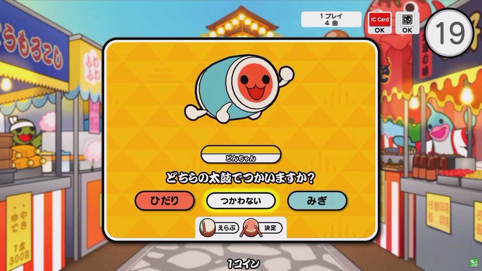
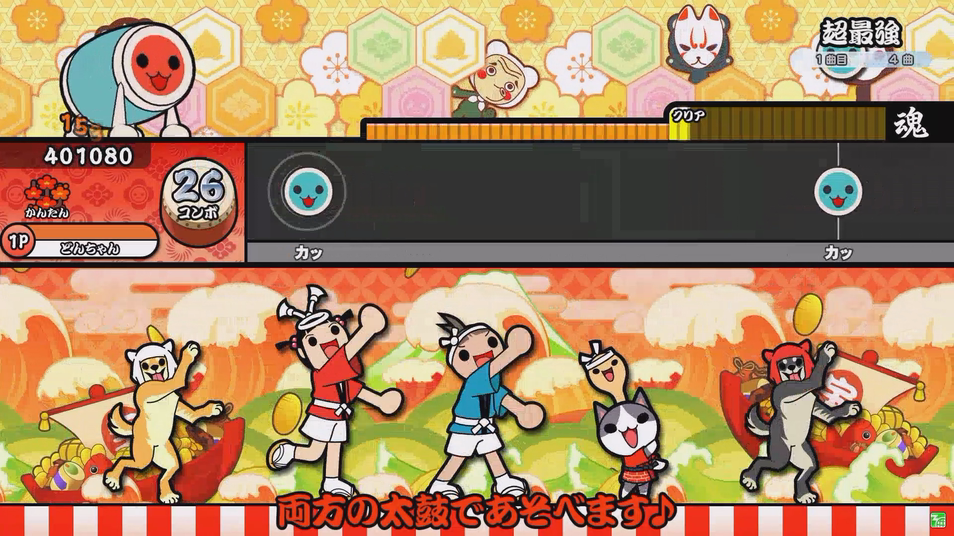
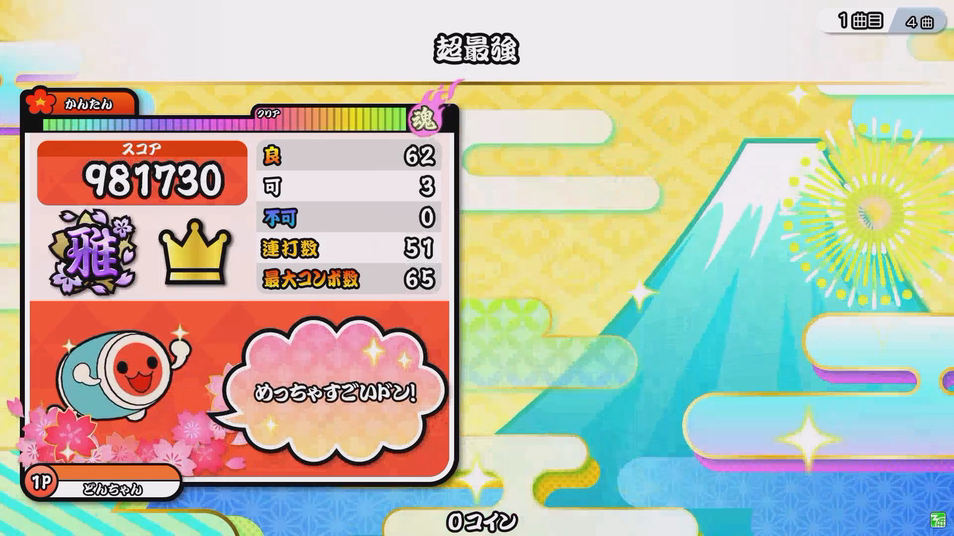
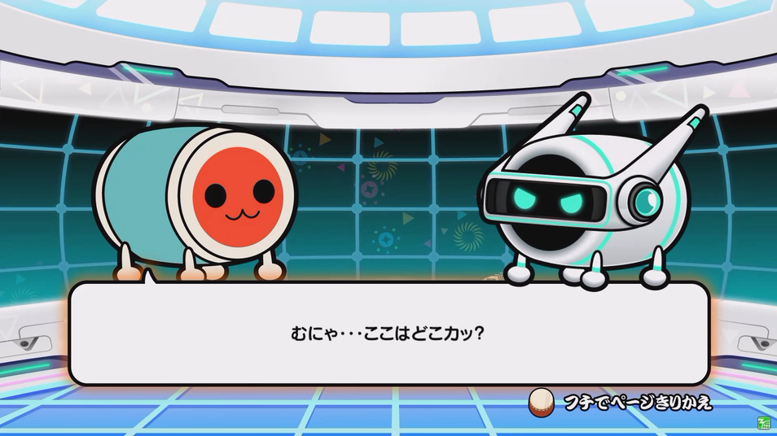
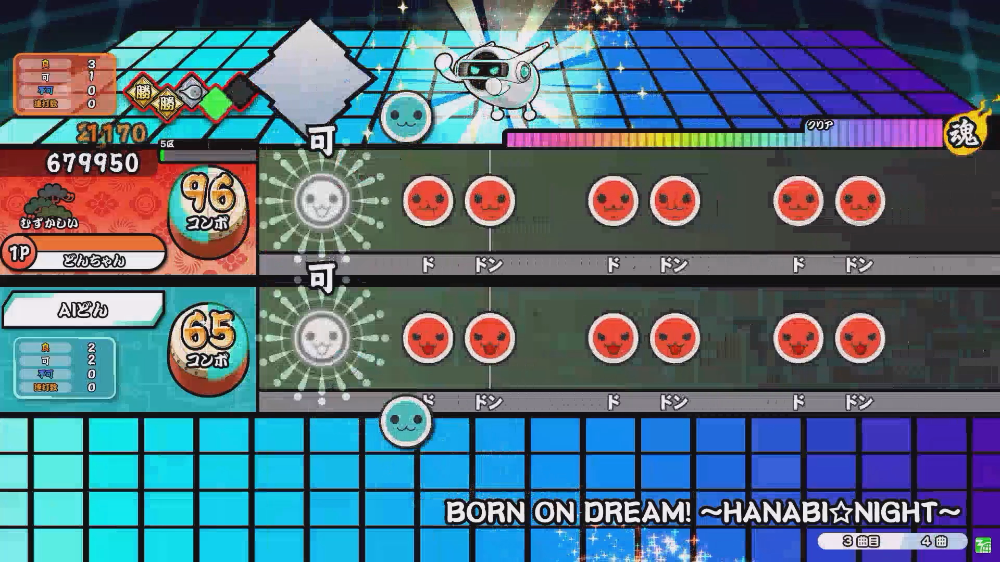
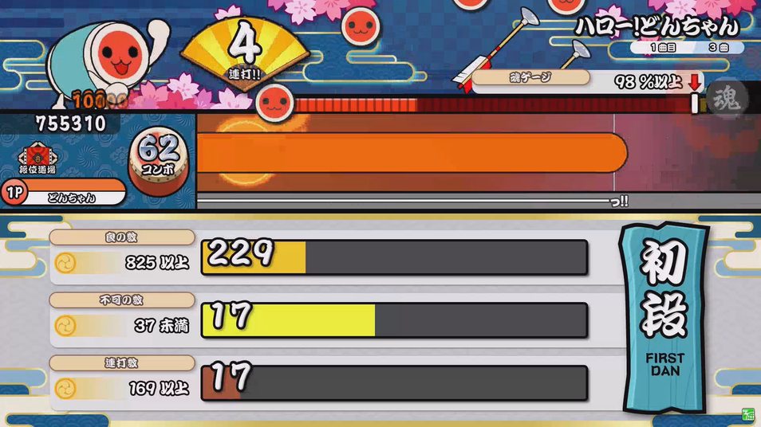
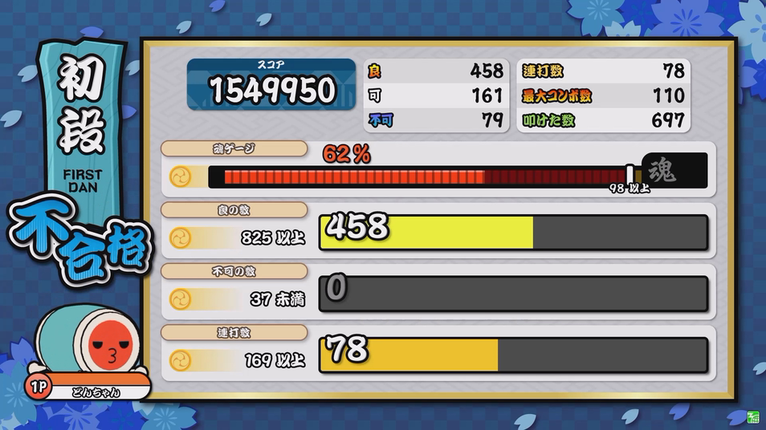
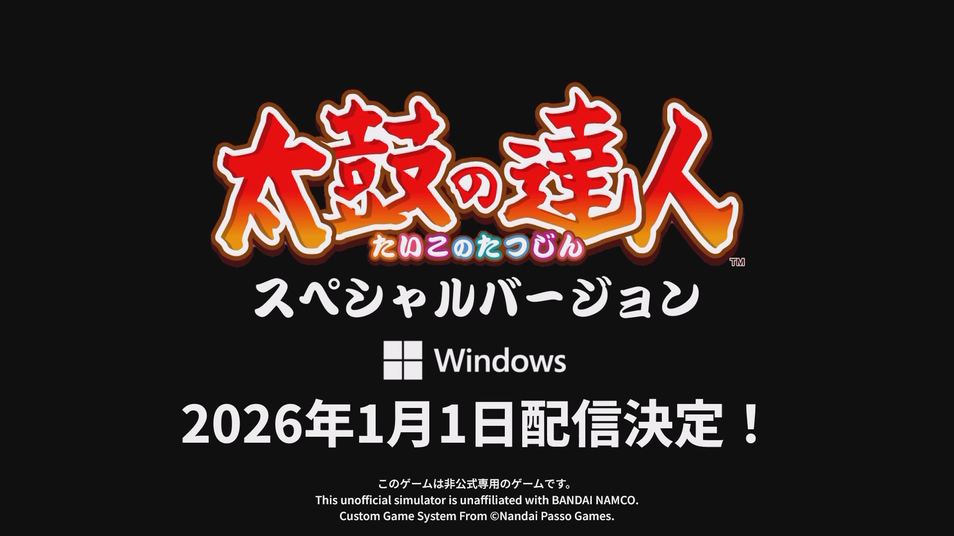

2025年11月27日
太鼓の達人 ニジイロ スペシャル Ver. いよいよティーザー公開！
みなさん、こんにちは！
お知らせ担当のパスオです。
皆さん、ゲーム用パソコンはよく使っていますか？
私はRTXグラフィックカード搭載のパソコンをよく使っています！
もちろん皆さんはよく使っていらっしゃると思います。
ということで、今日はゲーム用パソコンにとても合うゲームをご紹介したいと思います！

まず動画を見てください！
演奏ゲームでどんな曲でも自由に演奏できます！
AIバトル演奏では互角のバトル！
段位道場で実力を発揮しましょう！
2026年1月1日に決定！
配信開始の日までお楽しみに！
もっと詳しくご覧になりたい場合は、下記のリンクからチェックしてくださいね♪
↓ ↓ ↓ ↓ ↓ ↓ ↓ ↓ ↓ ↓ ↓
https://nandaipasso.github.io/taikosp/jp.html
引き続き、こまめな手の消毒、手洗い・うがいなどなどで、衛生を保ちつつ、太鼓の達人をお楽しみくださいね！
みんなで楽しく太鼓の達人をプレイしてくださいね♪
お知らせ担当のパスオです。
皆さん、ゲーム用パソコンはよく使っていますか？
私はRTXグラフィックカード搭載のパソコンをよく使っています！
もちろん皆さんはよく使っていらっしゃると思います。
ということで、今日はゲーム用パソコンにとても合うゲームをご紹介したいと思います！
■ 太鼓の達人 ニジイロ スペシャル Ver.公開！！
ゲームセンターで楽しんでいた太鼓の達人ゲームがついにPCバージョンで出ます！
名前で言えば···
.
「太鼓の達人 ニジイロ スペシャル Ver.」 ！！
もう家でも外でも楽しめるようになりました！
※ このゲームは Windows 10 64 bit / Windows 11 64 bit / Windows 12 64 bit 専用です。
(以前のWindows / MAC / その他のオペレーティングシステムはサポートされていません。)
※ このゲームを実行するには、RTXグラフィックカード搭載のコンピュータをご利用ください。
まず動画を見てください！
演奏ゲームでどんな曲でも自由に演奏できます！



AIバトル演奏では互角のバトル！


段位道場で実力を発揮しましょう！


配信日程は··· .2026年1月1日に決定！

配信開始の日までお楽しみに！
もっと詳しくご覧になりたい場合は、下記のリンクからチェックしてくださいね♪
↓ ↓ ↓ ↓ ↓ ↓ ↓ ↓ ↓ ↓ ↓
https://nandaipasso.github.io/taikosp/jp.html
引き続き、こまめな手の消毒、手洗い・うがいなどなどで、衛生を保ちつつ、太鼓の達人をお楽しみくださいね！
みんなで楽しく太鼓の達人をプレイしてくださいね♪